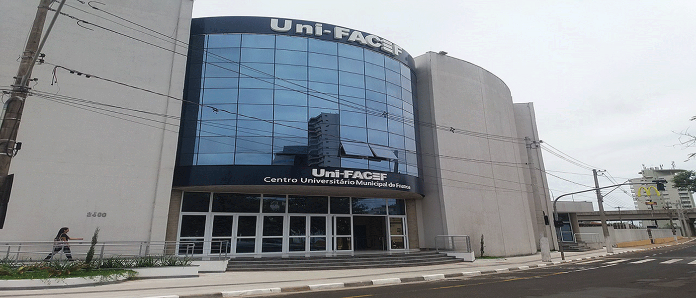

<div class="w3-rest" >
  <div class="w3-display-container">
    
    <div class="w3-display-right w3-third cor_facef margin-right opacidade-normal w3-round" id="sobre">
      <div class="" >
        <h2 align="center">Sobre a UNI-Facef</h2>
        <p class="w3-container w3-padding-16">
          O Uni-FACEF constitui-se como uma autarquia municipal, e, nessa qualidade, faz parte da administração pública indireta. É, portanto, uma instituição pública, sendo um dos maiores centros universitários do país e o maior de Franca, tendo ótimas notas no mec e em outras avaliações de ensino.
        </p>
      </div>
    </div>
    <div class="w3-display-left w3-third cor_facef opacidade-normal w3-round" id="ChamarLogin">
      <div class="">
        <h2 align="center">Bem vindo ao portal DaHora!</h2>
        <p class="w3-container w3-padding-16">O portal ideal para o controle de horas extras! para melhor controle de suas horas acadêmicas e eventos participados. tudo em um ambiente único e intuitivo!</p>
        <br>
        <button class="w3-button w3-block w3-white" routerLink='login'>LOGIN</button>
      </div>
    </div>

  </div>
</div>